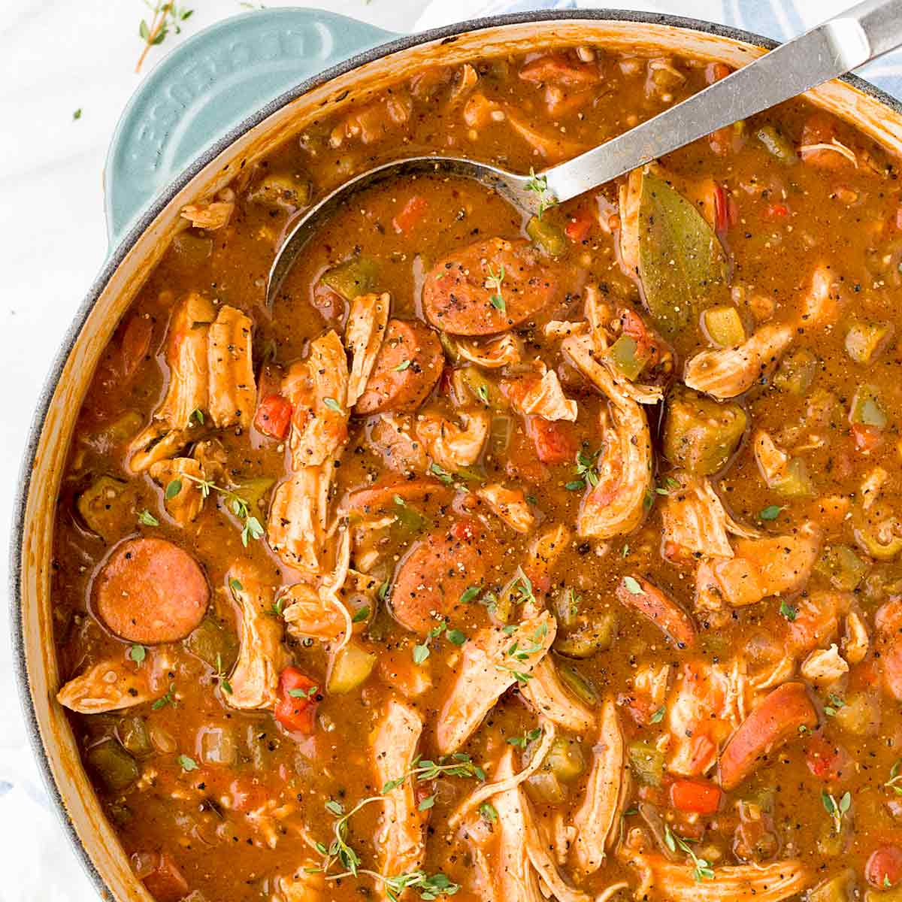

Garlic Soup (Sopa de ajo)
Being from Spain, one would imagine that I would choose paella as one of my favorite dishes, but I am partial to sopa de ajo, which translates as garlic soup. This hearty stew is typical from the interior of the country, where the long cold winters always welcome comfort dishes. To make garlic soup, you need olive oil, garlic, smoked paprika, day-old bread, broth, eggs, salt and, optionally, some serrano ham and/or chorizo. Start by frying quite a lot of sliced garlic on olive oil until it is golden; add the serrano ham or chorizo here if using. Then, add the day-old bread and stir-fry it for a few seconds; add the smoked paprika, broth and salt, and let it boil for about 20 minutes. Finally, turn the heat off, add an egg and let the soup rest for a few minutes before serving.
Gumbo
Recipe for Gumbo
Kimchi Fried Rice
Recipe for Kimchi Fried Rice

Un postre
Receta de un postre